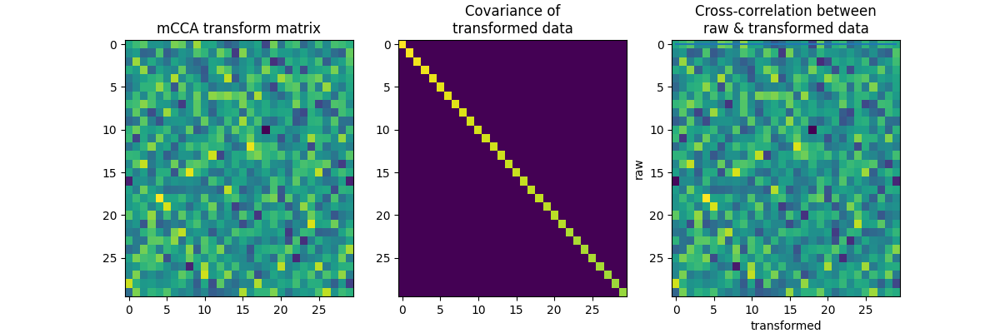
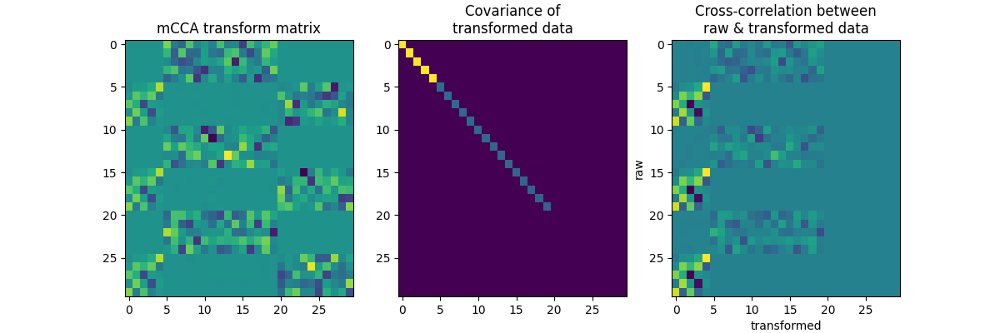
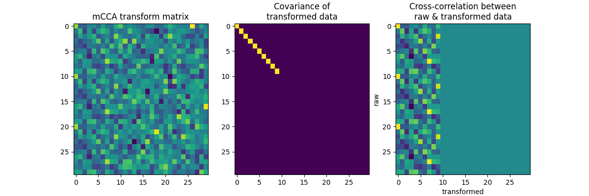

Note
Go to the end to download the full example code
Multiway canonical correlation analysis (mCCA)#
Find a set of components which are shared between different datasets.
Uses meegkit.cca.mmca()
import matplotlib.pyplot as plt
import numpy as np
from meegkit import cca
rng = np.random.default_rng(5)
First example#
We create 3 uncorrelated data sets. There should be no common structure between them.
Build data
x1 = rng.standard_normal((10000, 10))
x2 = rng.standard_normal((10000, 10))
x3 = rng.standard_normal((10000, 10))
x = np.hstack((x1, x2, x3))
C = np.dot(x.T, x)
print(f"Aggregated data covariance shape: {C.shape}")
Aggregated data covariance shape: (30, 30)
Apply CCA
[A, score, AA] = cca.mcca(C, 10)
z = x.dot(A)
Plot results
f, axes = plt.subplots(1, 3, figsize=(12, 4))
axes[0].imshow(A, aspect="auto")
axes[0].set_title("mCCA transform matrix")
axes[1].imshow(A.T.dot(C.dot(A)), aspect="auto")
axes[1].set_title("Covariance of\ntransformed data")
axes[2].imshow(x.T.dot(x.dot(A)), aspect="auto")
axes[2].set_title("Cross-correlation between\nraw & transformed data")
axes[2].set_xlabel("transformed")
axes[2].set_ylabel("raw")
plt.plot(np.mean(z ** 2, axis=0))
plt.show()

Second example#
Now Create 3 data sets with some shared parts.
Build data
x1 = rng.standard_normal((10000, 5))
x2 = rng.standard_normal((10000, 5))
x3 = rng.standard_normal((10000, 5))
x4 = rng.standard_normal((10000, 5))
x = np.hstack((x2, x1, x3, x1, x4, x1))
C = np.dot(x.T, x)
print(f"Aggregated data covariance shape: {C.shape}")
Aggregated data covariance shape: (30, 30)
Apply mCCA
A, score, AA = cca.mcca(C, 10)
Plot results
f, axes = plt.subplots(1, 3, figsize=(12, 4))
axes[0].imshow(A, aspect="auto")
axes[0].set_title("mCCA transform matrix")
axes[1].imshow(A.T.dot(C.dot(A)), aspect="auto")
axes[1].set_title("Covariance of\ntransformed data")
axes[2].imshow(x.T.dot(x.dot(A)), aspect="auto")
axes[2].set_title("Cross-correlation between\nraw & transformed data")
axes[2].set_xlabel("transformed")
axes[2].set_ylabel("raw")
plt.show()

Third example#
Finally let’s create 3 identical 10-channel data sets. Only 10 worthwhile components should be found, and the transformed dataset should perfectly explain all the variance (empty last two block-columns in the cross-correlation plot).
Build data
x1 = rng.standard_normal((10000, 10))
x = np.hstack((x1, x1, x1))
C = np.dot(x.T, x)
print(f"Aggregated data covariance shape: {C.shape}")
Aggregated data covariance shape: (30, 30)
Compute mCCA
A, score, AA = cca.mcca(C, 10)
Plot results
f, axes = plt.subplots(1, 3, figsize=(12, 4))
axes[0].imshow(A, aspect="auto")
axes[0].set_title("mCCA transform matrix")
axes[1].imshow(A.T.dot(C.dot(A)), aspect="auto")
axes[1].set_title("Covariance of\ntransformed data")
axes[2].imshow(x.T.dot(x.dot(A)), aspect="auto")
axes[2].set_title("Cross-correlation between\nraw & transformed data")
axes[2].set_xlabel("transformed")
axes[2].set_ylabel("raw")
plt.show()

Total running time of the script: (0 minutes 0.571 seconds)